- 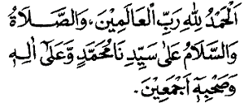
Alhamdulillaahi rabbil `aalamiin. Wash shalaatu was salaamu `alaa sayyidinaa Muhammadiw wa `alaa aalihii wa shahbihii ajma`iin(a).
Segala puji bagi Allah Tuhan semesta alam. Rahmat dan kesejahteraan semoga tetap atas junjungan kami Muhammad, atas keluarga dan sahabatnya semua.
- 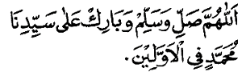
Allaahumma shalli wa sallim wa baarik `alaa sayyidinaa Muhammadin fil awwaliin(a).
Wahai Allah berilah rahmat, kesejahteraan dan berkah atas junjungan kami Muhammad, pada orang-orang yang terdahulu.
- 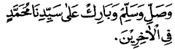
Wa shalli wa sallim wa baarik `alaa sayyidina Muhammadin fil aakhiriin(a).
Dan berilah rahmat, kesejahteraan atas junjungan kami Muhammad, pada orang-orang yang terkemudian.
- 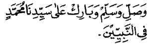
Wa shalli wa sallim wa baarik `alaa sayyidina Muhammadin fin nabiyyiin(a).
Berilah rahmat, kesejahteraan dan berkah atas junjungan kami Muhammad dan pada para nabi.
- 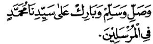
Wa shalli wa sallim wa baarik `alaa sayyidina Muhammadin fin nabiyyiin(a).
Berilah rahmat, kesejahteraan dan berkah atas junjungan kami Muhammad dan pada para rasul.
- 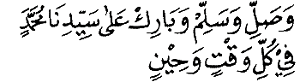
Wa shalli wa sallim wa baarik `alaa sayyidina Muhammadin fi kulli waqtiw wa hiin.
Berilah rahmat, kesejahteraan dan berkah atas junjungan kami Muhammad pada waktu dan ketika.
- 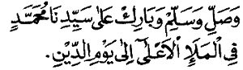
Wa shalli wa sallim wa baarik `alaa sayyidina Muhammadin fil mala-il a`laa ilaa yaumid diin(i).
Berilah rahmat, kesejahteraan dan berkah atas junjungan kami Muhammad pada kelompok tertinggi sampai hari pembalasan.
- 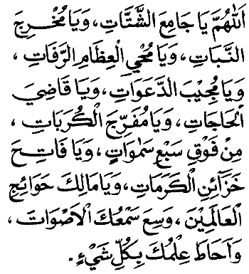
Allaahumma yaa jaami`asy syattaati wa yaa mukhrijan nabaati wa yaa muhyil `izhaamir rafaati wa yaa mujiibad da`awaati wa yaa qaadhiyal haajaati wa yaa mufarrijal kurabaati min fauqi sab`i samaawaatiw wa yaa faatiha khazaa-inil karamaati wa yaa maalika hawaa-ijil `aalamiin(a). Wasi`a sam`ukal ashwaata wa ahaatha `ilmuka bi kulli syai" (syai-in).
Wahai Dzat Yang menghimpun segala yang bercerai-berai, wahai Dzat Yang mengeluarkan (menumbuhkan) tumbuh-tumbuhan, wahai Dzat Yang menghidupkan tulang-belulang yang telah hancur, wahai Dzat Yang mengabulkan doa-doa, wahai Dzat Yang memenuhi / menunaikan kebutuhan-kebutuhan, wahai Dzat Yang melapangkan kesulitan-kesulitan dari atas tujuh langit, wahai Dzat Yang membuka perbendaharaan kemuliaan-kemuliaan, dan wahai Dzat Yang kebutuhan-kebutuhan seluruh alam. Luaslah pendengaran-Mu terhadap suara-suara dan ilmu-Mu meliputi segala sesuatu.

Nas-alukallaahumma bi qudratika `alaa kulli syai-iw wa bistighnaa-ika `an jamii`i khalqika wa bi hamdika wa majdika an tataqabbala minnaa maa bihii da`aunaaka, wa an tu`thiyanaa maa bihii sa-alnaaka bi haqqi suurati Yaasiin wa bi haqqil ismil a`zhami wa bi haqqi qalbil Qur-aani wa bi hurmati sayyidinaa Muhammadin shallallaahu `alaihi wa sallama wa `alaa aalihii wa ashhaabihith thayyibiinath thaahiriin(a).
Kami mohon kepada-Mu wahai Allah, dengan kekuasaan-Mu atas segala sesuatu, dengan kemahakayaan-Mu terhadap seluruh makhluk-Mu, dengan pujian dan kemuliaan-Mu untuk Engkau terima dari kami sesuatu yang telah kami mohonkan kepada-Mu, dan Engkau berikan kepada kami sesuatu yang kami mohonkan kepada-Mu dengan hak surat Yasin, dengan hak nama Yang Maha Agung, dengan hak hati Al-Qur'an dan dengan kehormatan junjungan kami Muhammad semoga Allah melimpahkan rahmat dan kesejahteraan atasnya, atas keluarganya, dan para sahabatnya yang baik-baik dan suci-suci.
- 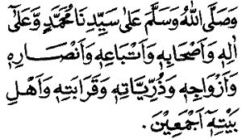
Wa shallallaahu wa sallama `alaa sayyidinaa Muhammadiw wa `alaa aalihii wa ashhaabihii wa atbaa`ihii wa anshaarihii wa azwaajihii wa dzurriyyaatihii wa qaraabatihii wa ahli baitihii ajma`iin(a).
Semoga Allah melimpahkan rahmat dan kesejahteraan atas junjungan kami Muhammad, keluarganya, para sahabatnya, para pengikutnya, para penolongnya, para istrinya, para keturunannya, para kerabatnya dan para ahli baitnya, semuanya.
- 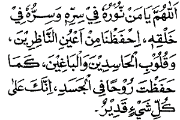
Allaahumma yaa man nuuruhuu fii sirrihii wa sirruhuu fii khalqihii, ihfazhnaa min a`yunin naazhiriina wa quluubil haasidiina wal baaghiina kamaa hafazhta ruuhan fil jasadi, innaka `alaa kulli syai-in qadiir(un).
Wahai Allah, wahai Dzat Yang cahaya-Nya di dalam sirr-Nya, dan sirr-Nya di dalam ciptaan-Nya, peliharalah kami dari mata para pemandang dan hati orang-orang yang dengki dan jahat sebagaimana Engkau memelihara ruh di dalam tubuh, sesungguhnya Engkau Maha Kuasa atas segala sesuatu.
- 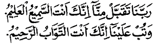
Rabbanaa taqabbal minnaa innaka antas samii`ul `aliimu wa tub `alainaa innaka antat tawwaabur rahiim(u).
Wahai Tuhan kami, terimalah dari kami sesungguhnya Engkau Maha Mendengar, dan terimalah taubat kami sesungguhnya Engkau Maha Penerima taubat lagi Maha Penyayang.
- 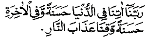
Rabbanaa aatinaa fid dun-yaa hasanataw wa fil aakhirati hasanataw wa qinaa `adzaaban naar(i).
Wahai Tuhan kami, berilah kami kebaikan di dunia dan kebaikan di akhirat, dan jagalah kami dari siksa neraka.
- 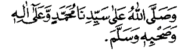
Wa shallallaahu `alaa sayyidinaa Muhammadiw wa `alaa aalihii wa shahbihii wa sallam(a).
Semoga Allah melimpahkan rahmat-Nya atas junjungan kami Muhammad, keluarga dan sahabatnya semua.
- 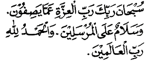
Subhaana rabbika rabbil `izzati `ammaa yashifuun(a) wa salaamun `alal mursaliin(a). Wal hamdu lillaahi rabbil `aalamiin(a).
Maha Suci Tuhan, Tuhan Keperkasaan dari segala sesuatu yang mereka sifatkan. Dan semoga kesejahteraan tetap atas para utusan. Dan segala puji bagi Allah, Tuhan semesta alam
- Membaca Al Fatihah bersama-sama.
- 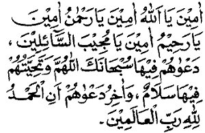
Aamiina yaa Allaahu, aaminaa yaa rahmaanu, aaminaa ya rahiimu, aaminaa yaa mujiibas saa-iliin(a) da`waahum fiihaa subhaanakallaahumma wa tahiyyatuhum fiihaa salaam(un) wa aakhiru da`waahum anil hamdu lillaahi rabbil `aalamiin(a).
Perkenankanlah wahai Allah, perkenankanlah wahai Dzat Yang Maha Pemurah, perkenankanlah wahai Dzat Yang Maha Pengasih, perkenankanlah wahai Dzat Yang memperkenankan para peminta. Doa mereka di surga adalah Maha Suci Engkau wahai Allah dan penghormatan mereka padanya adalah (ucapan) kesejahteraan. Dan akhir doa mereka adalah bahwasanya adalah segala puji bagi Allah, Tuhan semesta alam.